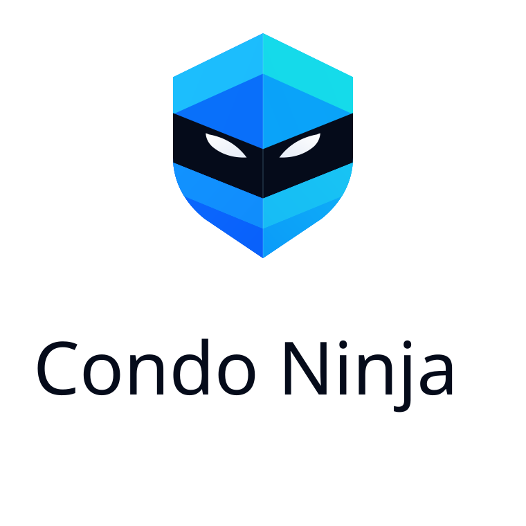
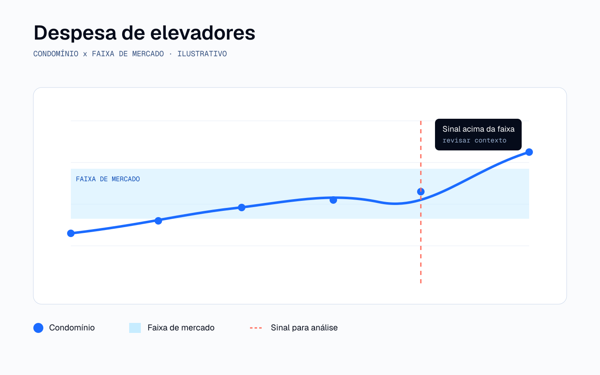
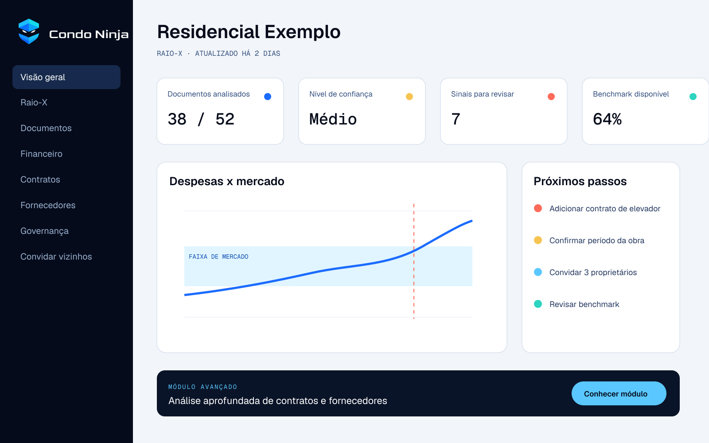
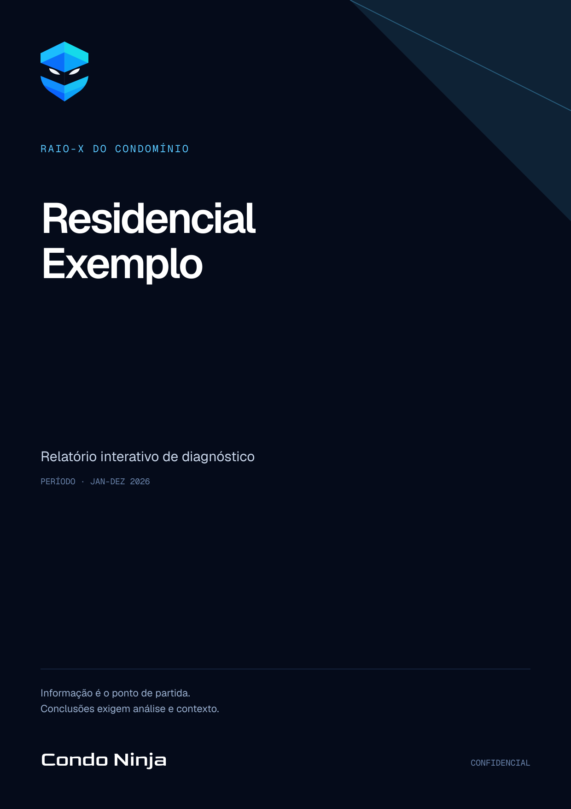
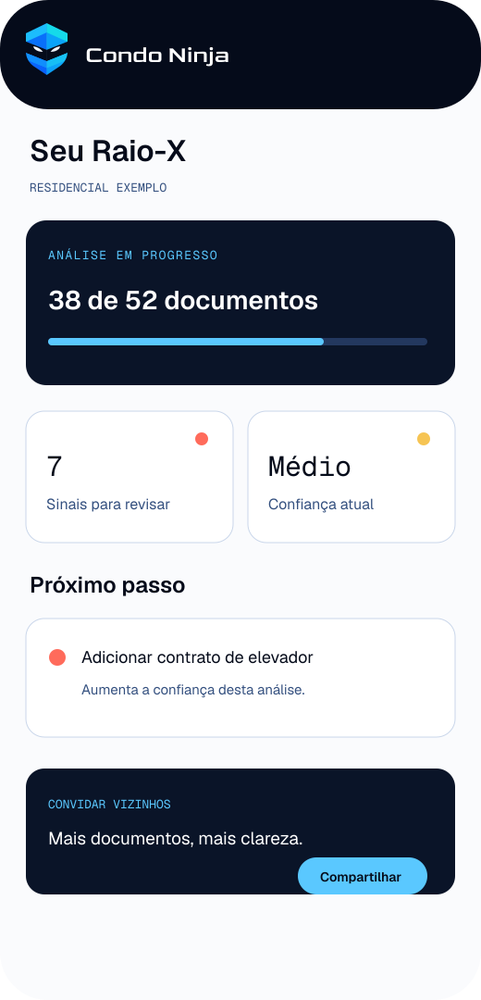

Dar a proprietários ferramentas, contexto e evidências para entender despesas, avaliar governança e coordenar decisões.
SISTEMA DE MARCA · 2026
Clareza para quem paga condomínio.
Uma marca independente que organiza informação, conecta evidências e devolve poder de decisão a proprietários e moradores.
BRAND IDEA
Clareza independente para quem é dono.
A Condo Ninja atua como segunda opinião independente dos proprietários. Não representa síndicos nem administradoras.
Organiza documentos, compara despesas e transforma sinais em evidências rastreáveis, sem pular da suspeita para a acusação.
01Informaçãodocumentos e dados
02Clarezacontexto e benchmark
03Coordenaçãoproprietários e evidências
04Decisãopróximo passo proporcional
PURPOSE
Reequilibrar o poder de informação nos condomínios.
Tornar a transparência verificável uma prática normal em condomínios brasileiros.
Transformar informação fragmentada em clareza acionável, com rigor e sem certezas artificiais.
POSITIONING
Forensic tech.
Consumer empowerment.
Independência estrutural
A análise trabalha do lado de quem paga e é dono, sem contratos administrativos a defender.
Evidência antes de conclusão
Cada achado mostra fonte, período, lacunas e nível de confiança.
Benchmark com contexto
Preço, escopo, localização, período e qualidade precisam ser comparáveis.
Coordenação dos proprietários
Mais documentos e participantes aumentam a base de evidências e a capacidade coletiva de agir.
SYMBOL
Escudo, cubo e olhar analítico.
Proteção do patrimônio sem estética de segurança privada.
Dados estruturados, camadas e visão sistêmica.
Discrição, observação e precisão.
Atenção ao detalhe e capacidade de perceber sinais.
O símbolo oficial mantém as facetas e a base levemente arredondada. A versão simplificada existe apenas para tamanhos mínimos.
LOGO SYSTEM
Goldman Regular 400. Sempre.
O símbolo preserva sua complexidade; o wordmark preserva sua voz tipográfica. Nenhum deles precisa de efeito para parecer tecnológico.
HORIZONTAL · DARK
 HORIZONTAL · LIGHT
HORIZONTAL · LIGHT
VERTICALMONOCHROME
ÁREA DE PROTEÇÃO · 1/4 DO SÍMBOLO
FULL COLOR · 32 PX+
SMALL SIZE · 16-24 PX
SEM BOLD FALSO · SEM GLOW · SEM STRETCH
COLOR
Ink guarda. Signal revela.
Azul é assinatura. Verde, âmbar e coral pertencem aos estados do produto e nunca substituem o sistema principal.
Ink 950
#050B1ASignal 500
#5AC8FFSignal 700
#1B6BFFPaper 50
#FAFBFD
PositivoAtençãoAlertaVerificadoAnalíticoEspecial
10,42:1 Ink 950 sobre Signal 500. Texto de botão usa Ink, não branco.
TYPOGRAPHY
Três vozes, funções distintas.
Goldman Regular 400Geist 400 · 500 · 600Geist Mono 400 · 500GRAPHIC LANGUAGE
Revelar o que estava disperso.
Facetas
Camadas, fontes e perspectivas que convergem.
Scan
Investigação progressiva com um foco claro.
Rede
Conexões entre documentos, fornecedores e moradores.
Evidence frame
Fonte, período, confiança e escopo dentro do quadro.
DATA VISUALIZATION
O gráfico também precisa provar o que afirma.
- Fonte, período, unidade e confiança visíveis.
- Benchmark como faixa, não verdade absoluta.
- Cor acompanhada de rótulo, ícone ou padrão.
- Dado ausente nunca vira zero.
- Sinal permanece diferente de conclusão.

UI BRAND
Confiança nasce da transparência da interface.
Achado, fonte, nível de confiança e próximo passo vivem no mesmo sistema.


Fonte perto do achadoConfiança visívelPróximo passo proporcionalPremium sem opacidade
GOVERNANCE SEAL
Uma arquitetura de evidência, não de compra.
O nível depende de critérios, documentos, rastreabilidade e confiança. Nunca do pacote contratado.
Nomes e limiares permanecem provisórios até a metodologia formal. O selo final deve mostrar ano, escopo e ID verificável.
MOTION
Movimento silencioso e preciso.
Scan, reveal, conexão e facetas. Sem glitch gratuito, bounce ou ritmo gamer.
- Standard
- 280 ms · cubic-bezier(.2,.8,.2,1)
- Enter
- 480 ms · cubic-bezier(.16,1,.3,1)
- Ambient
- 1200 ms · linear
VOICE
Calma, precisa e útil.
Dadoregistro observado
Sinalalgo merece atenção
Hipóteseexplicação a testar
Evidênciafonte que sustenta
Conclusãoleitura proporcional
Este valor está acima da faixa observada. Ainda faltam documentos para uma conclusão.
A IA provou o desvio. Vamos descobrir quem é o culpado.
APPLICATIONS
Uma linguagem, diferentes ritmos.




MANIFESTO
Quem é dono merece entender.
Todo mês, milhões de pessoas pagam para manter um patrimônio que é delas.
Recebem balancetes, atas, contratos e números. Informação existe. O que falta, muitas vezes, é clareza.
A Condo Ninja organiza o que está disperso, compara o que pode ser comparado e mostra onde vale olhar de novo.
Não transforma sinal em culpa. Não vende certeza artificial. Trabalha com fonte, contexto e evidência.
Porque transparência só ganha valor quando devolve capacidade de decisão.
DOWNLOADS
Sistema pronto para usar.
Arquivos vetoriais, PDFs, tokens, templates e documentação.
PDF
Brand Book · Screen
66 páginas · 16:9 PDFBrand Book · Print
66 páginas · A4 SVG{kind=link}
Lockup horizontal
Master vector SVG{kind=link}
Símbolo oficial
Full color JSONDesign tokens
Produto e marca CSSVariables
ImplementaçãoInformação é o ponto de partida. Clareza devolve poder de decisão.